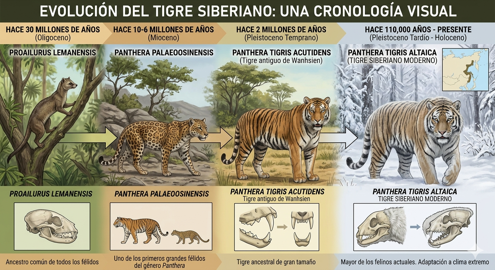
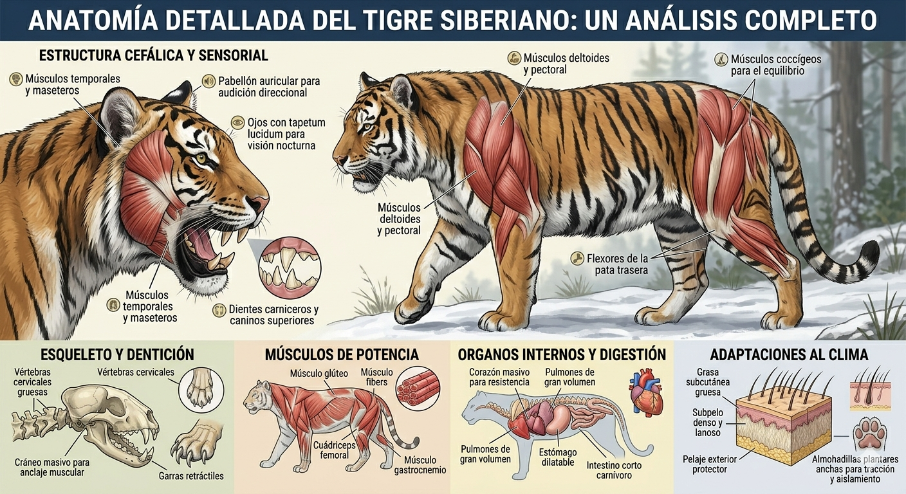
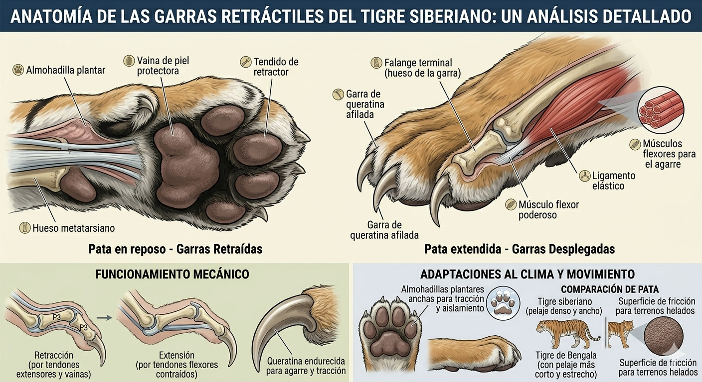
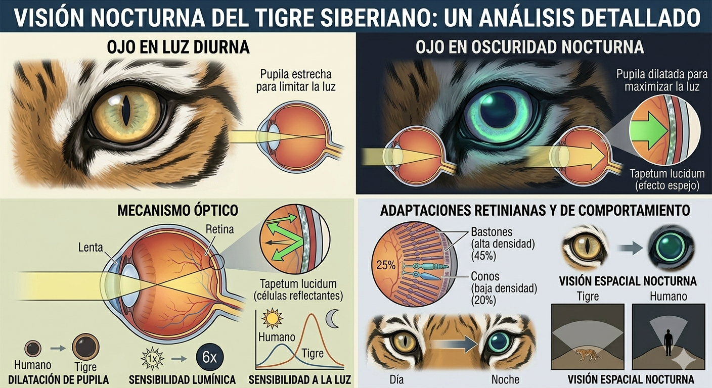

El Tigre Siberiano
El Felino Más Grande del Mundo
El Tigre Siberiano

Evolución
La historia evolutiva del tigre siberiano
Comenzó hace unos 30 millones de años con el Proailurus lemanensis, un pequeño carnívoro de vida arbórea que sentó las bases biológicas de todos los félidos, como las garras retráctiles. Millones de años después, durante el Mioceno, surgió el Panthera palaeosinensis en Asia, representando uno de los primeros grandes felinos con rasgos craneales modernos. Con la llegada del Pleistoceno hace 2 millones de años, el Panthera tigris acutidens se consolidó como un depredador masivo y robusto que comenzó a dominar los ecosistemas asiáticos. Finalmente, tras sobrevivir a crisis genéticas y cambios climáticos drásticos, el tigre siberiano moderno (Panthera tigris altaica) se diferenció hace unos 110,000 años, desarrollando adaptaciones únicas para el frío extremo, como un pelaje más denso, una capa de grasa protectora y un tamaño superior al de cualquier otro felino para cazar presas grandes en los paisajes nevados del Lejano Oriente.

Anatomía
Características físicas del tigre siberiano
La anatomía del tigre siberiano es una obra maestra de la evolución adaptada para la fuerza bruta y la supervivencia en climas gélidos. Su estructura física está dominada por una musculatura poderosa, especialmente en los hombros y las patas traseras, que le permite realizar saltos explosivos y derribar presas que duplican su peso. El cráneo es macizo, con mandíbulas accionadas por músculos temporales extremadamente fuertes y caninos que pueden medir hasta 9 cm, diseñados para una mordida letal instantánea. Para soportar el frío del Lejano Oriente, posee una capa de grasa subcutánea de unos 5 cm en el vientre y los flancos, además de un pelaje denso con una capa interna lanosa que retiene el calor corporal. Sus garras son retráctiles para mantenerse afiladas y pueden alcanzar los 10 cm, funcionando como ganchos de agarre, mientras que sus almohadillas plantares son anchas y actúan como "raquetas de nieve" naturales, distribuyendo su gran peso (que puede superar los 300 kg) para moverse con sigilo y tracción sobre el terreno congelado.

Garras
Las garras del tigre siberiano: herramientas de caza y defensa
El funcionamiento de sus garras se basa en un sistema de queratina retráctil controlado por tendones y ligamentos elásticos. En estado de reposo, las garras permanecen enfundadas en vainas de piel para evitar el desgaste al caminar sobre el terreno rocoso o congelado, lo que les permite mantenerse extremadamente afiladas y garantiza que el tigre camine de forma totalmente silenciosa. Cuando el tigre ataca o necesita trepar, los músculos flexores se contraen, extendiendo las garras hacia afuera como cuchillas curvas que pueden alcanzar los 10 cm. Esta acción mecánica no solo sirve para herir, sino que actúa como un sistema de anclaje que impide que presas grandes, como alces o jabalíes, escapen una vez que el felino hace contacto.

Visión Nocturna
La visión nocturna del tigre siberiano: adaptaciones para la caza en la oscuridad
el tigre siberiano posee una sensibilidad a la luz seis veces superior a la de los seres humanos. Esto se debe principalmente al tapetum lucidum, una capa de células reflectantes situada detrás de la retina que actúa como un espejo. Cuando la luz entra en el ojo y pasa por la retina, el tapetum la refleja de vuelta para que las células fotorreceptoras tengan una segunda oportunidad de captarla, maximizando la escasa iluminación de la noche. Además, sus pupilas son circulares, lo que les permite un control preciso sobre la entrada de luz, y cuentan con una alta densidad de bastones (células sensibles a la luz) que les permiten detectar el más mínimo movimiento en la oscuridad total de los bosques boreales.
